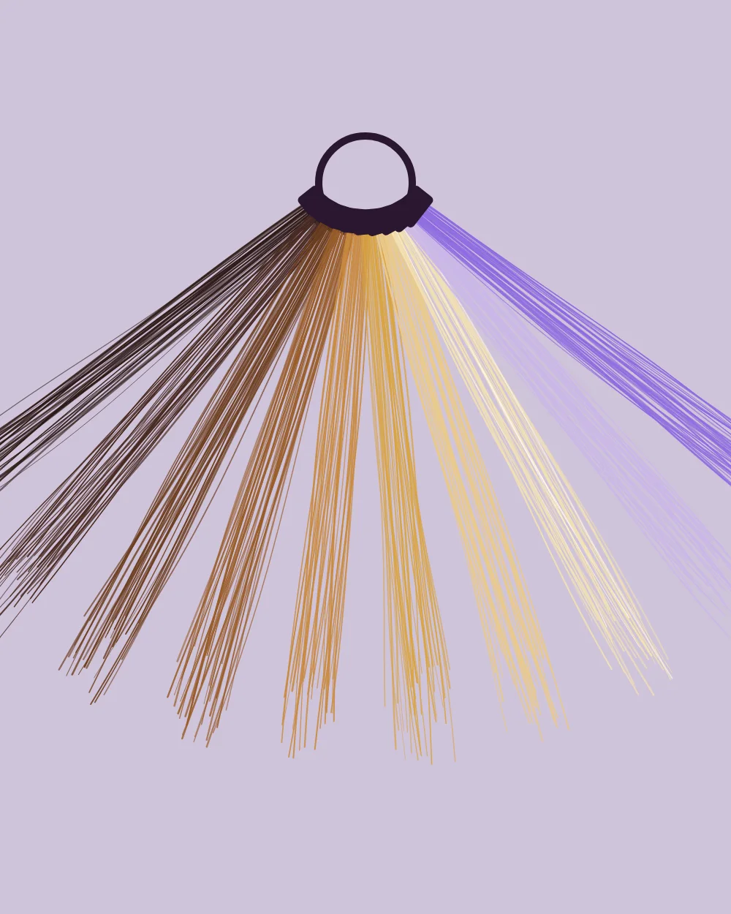
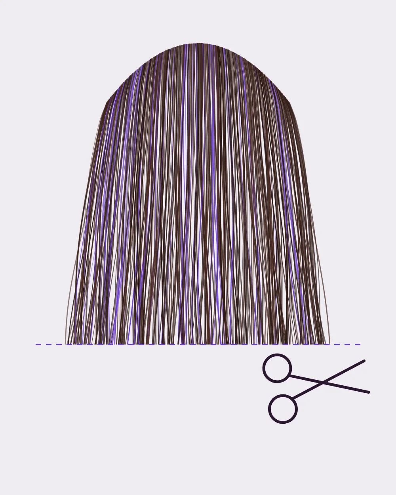
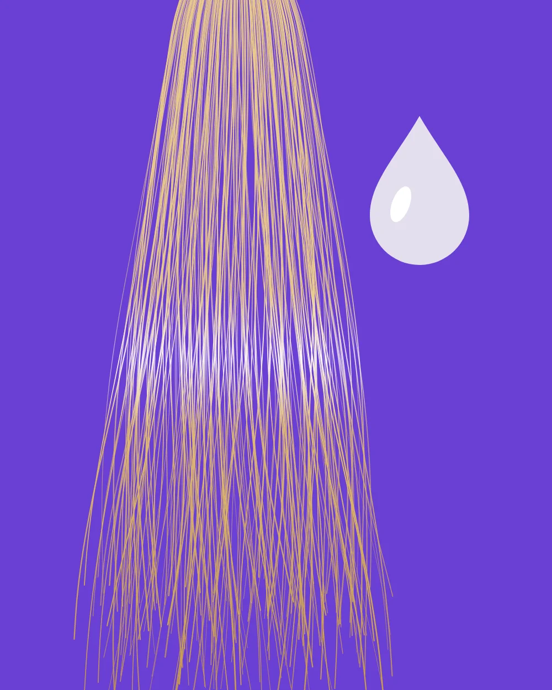
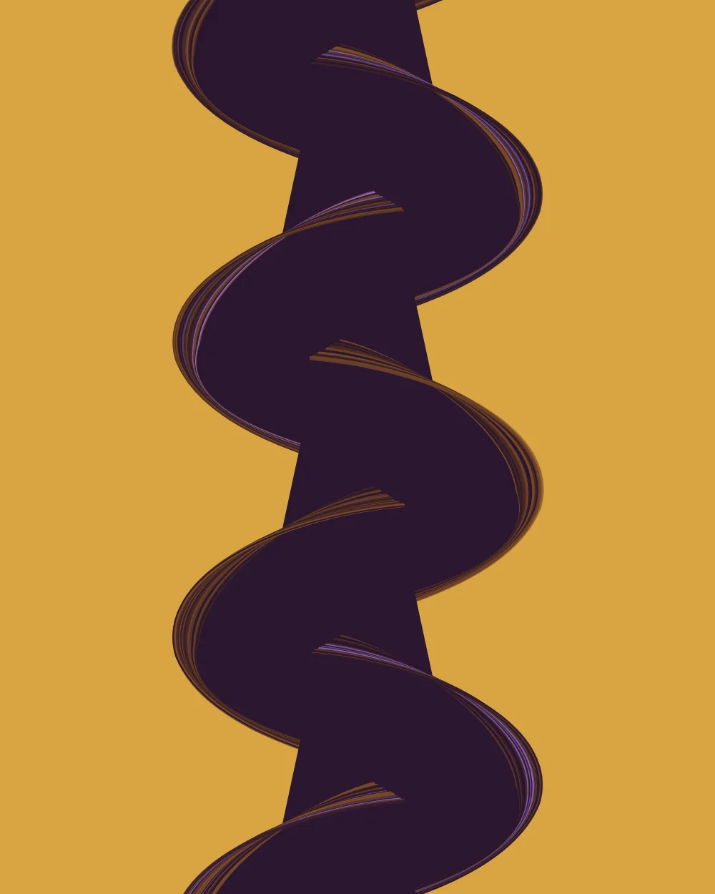
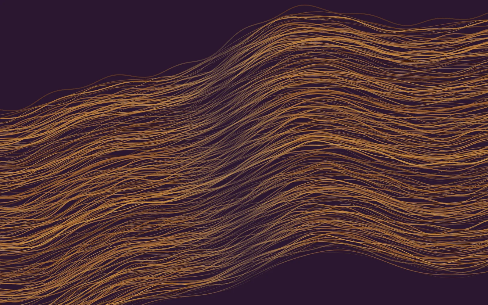
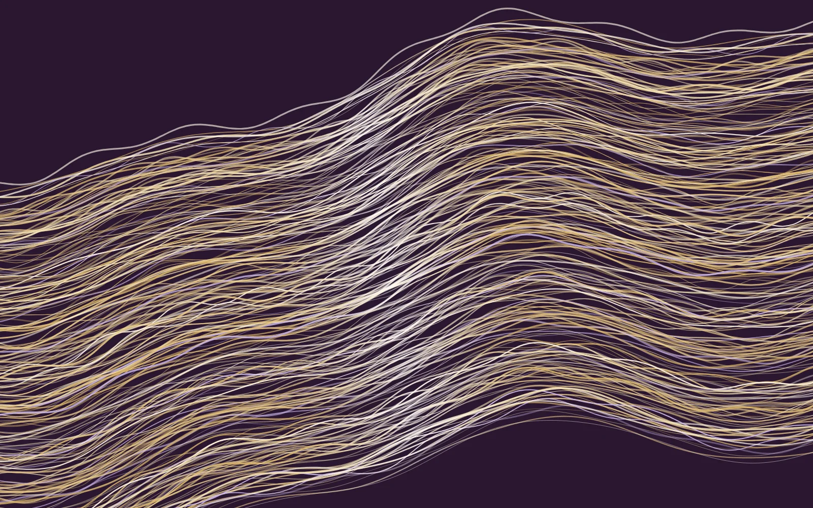

Colour that growsout beautifully.
A small colour-and-cut house in Stoke Newington. We plan every shade for week ten, not just the day you leave.
Brass to gloss, as you arrive
Services, by what your hair needs
Every visit starts with a conversation and ends with a finish. Prices are demo figures for this sample.

Colour
Root colour, balayage, full lightening and colour correction. We mix to your strand test, not to a chart.
Book colour
Cut & finish
Precision cuts for every texture, finished the way you will actually style it at home.
Book a cut
Gloss & care
Shine, tone and repair between colour appointments, so your colour stays clean for longer.
Book a gloss
Occasion
Weddings, events and anything that needs to hold until midnight. Trials come first.
Ask about a dateBrass out. Gloss in.
Lightened hair turns warm as it fades. A toning gloss cancels that warmth with violet pigment, so blonde reads clean again. Drag to compare.


BeforeAfter glossIllustration of a toning service. Real results depend on your starting colour.
Your first colour visit
Four steps, so the colour you leave with is the one we planned together.
Consultation
Fifteen minutes, free, in the studio or by video. Bring photos of what you love and what you don’t.
Strand test
At least 48 hours before, we colour a hidden section to see how your hair lifts and takes tone.
Colour day
Your colourist mixes from the test and talks you through each stage. Most visits take two to four hours.
Week-ten check
Your formula goes on file, and we invite you back for a quick look at how it has grown out.
How we work
Your formula is written down.
Every shade, developer and timing goes on your record, so any colourist here can repeat it exactly.
We keep four chairs, one client each.
Nobody sits processing while their colourist starts on someone else.
Growing out is part of the plan.
We place colour so roots soften as they grow, which usually means fewer appointments a year.
The people behind the chair
Portraits are illustrations for this sample; a live site would use real photos.
Pick a time that suits you
Choose a service and a day to see open times. You pay in the studio after your visit, and can move a booking up to 48 hours before.
 Illustrated map, not to scale
Illustrated map, not to scaleFind the studio
00 Demo Row
Stoke Newington, London N16 0XX
Placeholder address for this sample.
| Tuesday and Wednesday | 10:00 to 19:00 |
| Thursday and Friday | 10:00 to 20:00 |
| Saturday | 09:00 to 17:00 |
| Sunday and Monday | Closed |
Questions, answered
Do I need a consultation before colour?
For any lightening or colour correction, yes. It’s free, takes fifteen minutes and lets us give you an exact price before you book.
Why do you ask for a strand test?
It shows how your hair lifts and takes tone, so the colour on the day matches the plan. We do it at least 48 hours before your appointment.
Do you cut curly and textured hair?
Yes. Adaeze leads our curl cuts, which we do dry so we can see how each curl sits.
How do I pay?
By card or contactless in the studio, after your visit. Booking online simply holds your time.
Can I move or cancel a booking?
Yes, up to 48 hours before, from the link in your confirmation email or by calling the studio.